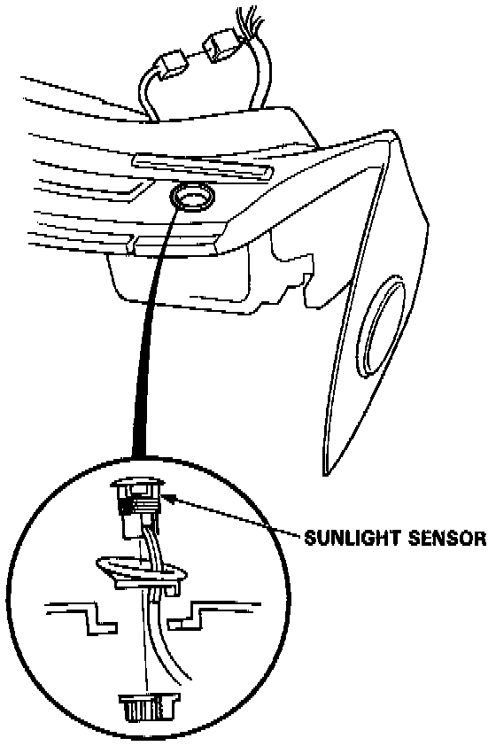

Solar Sensor: Service and Repair

Sunlight Sensor Removal
1. Remove the dashboard.
2. Unscrew the sunlight sensor from the dashboard and disconnect the wire harness.
NOTE: Be careful not to damage the dashboard.
Installation
Install the Sunlight Sensor in the reverse order of removal.